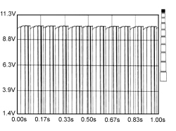

5580HB PARKING SENSOR SYSTEM OPERATION CHECK
- Path
- Test > 55 ELECTRICAL EQUIPMENT > 5580 SPECIAL ACCESSORIES > 5580H PARKING OBSTACLE DETECTION DEVICE > 5580HB PARKING SENSOR SYSTEM OPERATION CHECK
- Kind
- test / check procedure
- Applies to
- all engines; all production periods
- Interactive page
- https://sloeber94.github.io/elrnDB-fCrm/en/#/194002545
Applies to: all engines; all production periods
STEP | CHECK TO BE PERFORMED | RESOLUTION IF THE CHECK IS NOT OK |
1 | Rear ultrasound sensor power supply check
|
Op. 5580H36 PARKING SENSOR SYSTEM REAR SENSORS - R.R. WITH REAR BUMPER REMOVED
Op. 5580H10 PARKING OBSTACLE DETECTION DEVICE ELECTRONIC CONTROL UNIT - R.R. |
2 | Check the earth
|
Op. 5580H10 PARKING OBSTACLE DETECTION DEVICE ELECTRONIC CONTROL UNIT - R.R. |
3 | Ultrasound signal check Place the key in the ON position
|
Op. 5580H36 PARKING SENSOR SYSTEM REAR SENSORS - R.R. WITH REAR BUMPER REMOVED
Op. 5580H10 PARKING OBSTACLE DETECTION DEVICE ELECTRONIC CONTROL UNIT - R.R. |

Ultrasound signal
Topics linked from this page (2)
- 5580H10 PARKING OBSTACLE DETECTION DEVICE ELECTRONIC CONTROL UNIT - R.R.
- 5580H36 PARKING SENSOR SYSTEM REAR SENSORS - R.R. WITH REAR BUMPER REMOVED